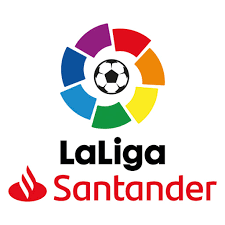

HISTORIA
Desde principios del siglo XX, debido a la creciente popularidad de la práctica del fútbol, comenzaron a surgir en España los primeros campeonatos regionales, como la Copa Macaya en Cataluña en 1901, y nacionales, como la Copa de la Coronación en 1902. El éxito de este último torneo supuso la creación al año siguiente del Campeonato de España (posteriormente conocido como Copa del Rey) y de diversos Campeonatos Regionales en todo el territorio nacional. De esta manera, se instauró un sistema que perduró un cuarto de siglo, conforme al cual los campeones regionales se clasificaban para disputar el torneo nacional. Esta es la razón por la que incluso a día de hoy a los campeones de Copa del Rey (y no a los de Liga) se les denomina "campeones de España". Sin embargo, con el asentamiento del profesionalismo en el fútbol español, se consideró oportuno crear un campeonato de liga a semejanza del ya existente en Inglaterra, tanto por razones competitivas como de rentabilidad económica. Una primera experiencia, en la temporada 1927-28, no llegó a fructificar debido a las discrepancias entre las federaciones regionales y los clubes, divididos entre los denominados «maximalistas» (aquellos que habían sido campeones nacionales) y los «minimalistas» (aquellos que habían sido solo campeones regionales). Poco después, se intercambiaron los apodos, por entender que los primeros querían una liga mínima (con pocos participantes) y los segundos, una liga máxima (con el mayor número de equipos). Así pues, la que debía ser la primera Liga Española de Foot-Ball profesional se desdobló en dos competiciones inacabadas: el Torneo de Campeones y la Liga Máxima, sin poder resolverse las rencillas hasta la temporada siguiente. Tras numerosas reuniones, se llegó finalmente a un acuerdo para establecer el primer torneo regular y quedó dividido en dos categorías: el Campeonato Nacional de Liga de Primera División y el de Segunda División.